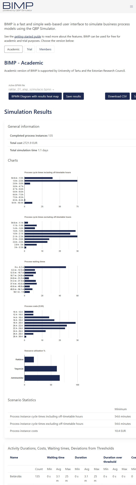

BPA · nap02 · 05 · Mentett, ellenőrzött eredmények (2026-10-05)
Atlas raktár

5. blokk – Atlas Market raktár, mérés és javaslat
Három valódi BIMP Academic futás 2026-10-05-én, mindegyikben 135 befejezett eset. Hétfői kezdés 06:00, napi hétfő–vasárnap 06:00–22:00 rendelkezésre állás, exponenciális érkezésköz 7 perc. Warm-up és tail kizárás 0%. Éjszakai túlóra nincs az alapmodellben; a fennmaradó feladatok a következő napon folytatódnak.
Erőforrások: Adminisztrátor 2 fő, 12 EUR/óra; Targoncás 8 vagy 10 fő, 14 EUR/óra; Raktáros 36 fő, 10 EUR/óra. A megadott létszám egyidejű kapacitás; műszakbeosztás és szünet külön nincs modellezve.
Feladatok Normal átlag/szórás, mindenütt perc: Kapuregisztráció 4/1, Lerakodás 40/10, Áruátvételi ellenőrzés 50/15, Kárjegyzőkönyv és félretétel 25/10, Betárolás 20/5, Készletrögzítés 7/2. Sérült tétel: igen 8%, nem 92%. B változatban kizárólag a nappali Betárolás lesz Fixed 0 perc; az éjszakai munka külön költség.
Kapacitásbecslés
Alap: 135 × (40+20) = 8100 targonca-perc igény; 8 × 16 × 60 = 7680 perc kapacitás. Hiány 420 perc; igény/kapacitás 105.47%. A változat: 9600 perc kapacitás, 84.38% terhelés. B: nappal 135 × 40 = 5400 perc, 70.31% terhelés, plusz 2700 perc éjszakai betárolás.
| Forgatókönyv | Átlag munkaidőben | Átlag naptári | Kihasználtság | Legnagyobb átlagos várakozás | Futás hossza |
|---|---|---|---|---|---|
| raktar_01_alap | 3.1 hours | 5.2 hours | Raktáros: 15.91%; Targoncás: 82.01%; Adminisztrátor: 62.5% | Betárolás: 29.7 m | 1.2 days |
| raktar_02_A_tiz_targoncas | 2.2 hours | 3 hours | Raktáros: 18.56%; Targoncás: 76.85%; Adminisztrátor: 73.22% | Lerakodás: 3.8 m | 1.1 days |
| raktar_03_B_kulon_betarolas | 2.1 hours | 2.8 hours | Raktáros: 17.85%; Targoncás: 61.15%; Adminisztrátor: 66.82% | Készletrögzítés: 7.8 m | 1.1 days |
Az utolsó kamion befejezése
A BIMP a teljes futás hosszát ezen a nézeten kerekítve mutatja: alap 1.2 nap; A és B 1.1 nap. A kezdés 2026-10-05 06:00, ezért mindhárom futás utolsó kamionfolyamata a következő nap reggelén/délelőttjén fejeződött be. A kerekített értékek alapján az alapváltozat kb. 2026-10-06 10:48, A és B kb. 2026-10-06 08:24; ezek becslések, nem percre pontos időbélyegek. Egy tized nap kerekítési pontossága önmagában körülbelül ±72 percet jelent. A 135 exponenciális érkezés nem garantáltan esik egy napra; az utolsó befejezésben az érkezési mintázatnak is szerepe van.
Költség és üzleti javaslat
Első lépésként az A változatot javaslom: a két további nappali targoncakapacitás megszünteti a számított tartós hiányt, és a mért munkaidős átlagot 3.1 óráról 2.2 órára csökkentette. A gépek és a kezelők egyidejű rendelkezésre állása egyaránt szükséges. Tervezett többlet munkaerőköltség az egyszerű 16 órás kapacitásfeltevéssel: 2 × 16 × 14 = 448 EUR/nap, gép- és egyéb költségek nélkül.
B 2.1 órás munkaidős átfutást adott, de az áru végleges betárolásának munkája nem tűnik el. 2700 perc = 45 munkaóra, 14 EUR/órával legalább 630 EUR közvetlen munkaköltség. Négyórás ablakban 45/4 = 11.25, tehát legalább 12 egyidejű targoncakapacitás kell. Tizenkét teljes négyórás kapacitás költsége 672 EUR, ami még nem tartalmaz éjszakai pótlékot, gépköltséget és biztonsági tartalékot. A B-ben mért 2721.9 EUR nappali feladatköltséghez az áthelyezett munkát külön hozzá kell számítani. A készletrögzítés ekkor előzetes átvételi rögzítés; a készlet fizikai hozzáférhetősége csak a későbbi betárolással teljes.
A BIMP összköltsége az elvégzett feladatok erőforrásköltségét mutatja (alap 3353 EUR, A 3304.8 EUR, B nappal 2721.9 EUR), nem a teljes rendelkezésre álló műszak bérét. A kisebb A futásköltség ezért nem bizonyít olcsóbb személyzetet; a feladatidők és ágak véletlenszerűen is változnak.
A raktárosok mért átlagos kihasználtsága 15.91–18.56%; ebből önmagában létszámcsökkentést nem javaslok. Vizsgálni kell az egyéb feladatokat, csúcsterhelést és a beosztást. A változatok külön véletlen minták, ezért a pontos üzleti döntéshez további ismétlések és valós időadatok szükségesek.
Fájlok
Az alapmodell mellett három külön paraméterezett BPMN, három megjelenített eredményoldal, három JSON-tábla és három CSV készült. A paraméterekből generált BPMN-t a BIMP betöltötte; ellenőriztük a 06:00 kezdést, a napi munkarendet, a perceket, a létszámokat és a 92/8 ágakat. A Download CSV / Save scenario export helyett a látható táblák és a dokumentált QBP paraméterek helyben mentett példánya áll rendelkezésre.